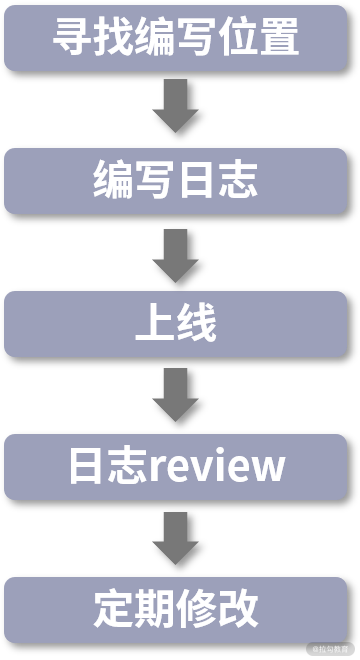

- 00 分布式链路追踪实战.md.html
- 01 数据观测：数据追踪的基石从哪里来？.md.html
- 02 系统日志：何以成为保障稳定性的关键？.md.html
- 03 日志编写：怎样才能编写“可观测”的系统日志？.md.html
- 04 统计指标：“五个九”对系统稳定的真正意义.md.html
- 05 监控指标：如何通过分析数据快速定位系统隐患？（上）.md.html
- 06 监控指标：如何通过分析数据快速定位系统隐患？（下）.md.html
- 07 指标编写：如何编写出更加了解系统的指标？.md.html
- 08 链路监控：为什么对于系统而言必不可少？.md.html
- 09 性能剖析：如何补足分布式追踪短板？.md.html
- 10 链路分析：除了观测链路，还能做什么？.md.html
- 11 黑白盒监控：系统功能与结构稳定的根基.md.html
- 12 系统告警：快速感知业务隐藏问题.md.html
- 13 告警质量：如何更好地创建告警规则和质量？.md.html
- 14 告警处理：怎样才能更好地解决问题？.md.html
- 15 日志收集：ELK 如何更高效地收集日志？.md.html
- 16 指标体系：Prometheus 如何更完美地显示指标体系？.md.html
- 17 链路追踪：Zipkin 如何进行分布式追踪？.md.html
- 18 观测分析：SkyWalking 如何把观测和分析结合起来？.md.html
- 19 云端观测：ARMS 如何进行云观测？.md.html
- 20 运维集成：内部的 OSS 系统如何与观测相结合？.md.html
- 21 结束语 未来的监控是什么样子？.md.html
- 捐赠
03 日志编写：怎样才能编写“可观测”的系统日志？
在 02 课时，我带你重新认识了系统日志，介绍了日志在系统中的重要性。既然日志如此重要，那我们应该如何编写它呢？
这一节，我将带你从编写日志的工具、编写日志的方式，以及日志编写后的管理，就像是购物的售前、售中、售后，这 3 个方面来讲解，怎么样才可以写出更具有“可观测性”的日志内容。

日志框架
在编写日志之前，咱们先来了解一下有哪些日志框架可以协助我们编写日志。
在介绍日志框架之前，我需要说明一下，如果你仍在使用 System.out.println、Exception.printStackTrace 或类似的控制台输出日志的方式，我推荐你改用第三方日志框架编写。这种控制台输出的方式，可以从它们的源码了解到它们是线程同步的，大量使用这种方式，会对程序性能造成严重的影响，因为它们同一时间只能有一个线程在进行执行。
日志框架在系统中一般分为 2 种类型：日志实现框架和日志接口框架。下面我会对它们分别说明。
日志实现框架
顾名思义，就是日志的实现方，每个框架都提供自己的日志管理和写入的方式。Java 中的日志框架很不统一，这里我就以认知度最高的 3 个项目来说明。
- log4j 1.x：2001 年发布，后来成为 Apache 基金会的顶级项目。log4j 1.x 当年可以说是基本都在使用的日志实现框架，即便到了现在，仍有很多项目在使用它。log4j 1.x 使用起来确实很方便，但是 1.x 版本在高并发的情况下，存在比较严重的锁竞争关系，会导致性能不能得到有效的发挥；
- logback：log4j 1.x 创始人的另一个项目。它提供了更加高效的写入性能，据官方说明是 log4j 1.x 性能的 10 倍，以及更多的功能，比如异步日志。
- log4j 2.x：随着 logback 流行，log4j 1.x 的开发人员也想跟上步伐，于是推出了一套新的日志框架，号称比 logback 更快。log4j 2.x 借鉴了很多 logback 中的想法和功能，并解决了 log4j 1.x 架构上存在的一些问题。同时，它采用 Disruptor 来进行异步日志，相比较 Java 自带的队列，它提供了更高效且更完整的队列实现方案。
对于这三种框架，目前市面上都有在用，但是大多是 logback 和 log4j 2.x。虽然异步日志的效率 logback 和 log4j 2.x 相差无几，但 log4j 2.x 仍有些微弱的优势。
日志接口框架
可以看到，Java 中是存在多种不同日志框架的实现的，这就会造成 2 个问题：
- 多框架协作：在一个项目中，不光有你的代码，还有各种各样的框架代码，比如分布式协调会用到 Zookeeper、Curator；RPC 通信会用到 Dubbo、Thrift。为了方便开发，业务系统中往往集成了许多第三方框架。我们需要日志来了解各个第三方框架之间的协作状态，这些第三方框架又依赖于各个日志框架进行输出。这时候如果直接使用像 logback、log4j 这样的日志框架，岂不是业务系统要接入每个日志框架？
- 不同框架竞争：如果要引入多个日志框架，我们还需要考虑各个框架的输出位置。要是多个日志框架同时写入一个日志文件，还会涉及竞争问题，导致性能无法发挥。
由此就出现了面向接口的日志框架，它提供了统一的 API。开发人员在编写代码的时候，直接使用这套面向接口的日志框架，当业务项目人员在使用时，只需要选择好实现框架，就可以统一日志实现框架。

目前使用最为广泛的日志接口框架是 SLF4J，出自 logback 的开发者，目前基本已经形成规范。SLF4J 提供了动态占位符的功能，大大提高了程序的性能，无须开发人员再对参数信息进行拼接。
比如默认情况下程序是 info 级别的，在原先的代码方式中想要进行日志输出需要自行拼接字符串：
logger.debug("用户" + userId + "开始下单:" + orderNo + ",请求信息:" + Gson.toJson(req));
这会产生一个问题，系统中如果存在大量类似的代码，同时系统只输出 info 及 info 以上级别的日志，那么，在输出 debug 日志时会产生大量的字符串，而并不会输出 debug 日志，最后造成字符串不停地拼接，浪费系统性能。此时，SLF4J 就可以使用占位符的功能编写日志，比如像下面这样：
logger.debug("用户{}开始下单:{},请求信息:", userId, orderNo, Gson.toJson(req));
通过这样的形式，SLF4J 就可以根据日志等级判断，只对符合要求的日志进行数据拼接和打印。
有些时候日志输出需要进行数值计算，或者 JSON 转换，此时就需要一定的计算任务。但方法调用如果被当作参数传递的话一样会被执行，所以 Java8 中 SLF4J 还可以通过 Supplier 来传递。如下所示：
logger.debug("用户{}开始下单:{},请求信息:", userId, orderNo, () -> Gson.toJson(req))
可以看到，SLF4J 不仅为我们制定了一套面向接口开发的方式，还为我们明确了如何有效地编写日志。这也是为什么越来越多人喜欢用 SLF4J。
日志编写方式
在详细介绍了我们在开发时需要使用的日志框架后，我将正式展开我们的标题：“如何编写‘可观测’的日志？”我会从日志编写位置、写入性能、占位符、可读性、关键信息隐蔽、减少代码位置信息的输出、文件分类、和日志 review 这 8 个点来讲解，并将它们分成了 2 个方向：
- 日志开发时（前 5 项）：怎么样写出更有效率的日志？
- 日志完成后（后 3 项）：上线前后有哪些需要注意的？

日志编写位置
日志编写的位置可以说是重中之重，好的日志位置可以帮你解决问题，也可以让你更加了解代码的运行情况。我总结了几点比较重要的编写日志的位置，以供参考。
- 系统/应用启动和参数变更：当系统启动时，可以将相关的参数信息进行打印，以便出现问题时，更准确地查询原因；参数信息可能并不存储在本地，需要通过配置中心获取，而参数信息有变更时，也需要将变更后的内容输出在日志中。
- 关键操作节点：最典型的就是在关键位置添加日志，记录用户进行的某个操作。当出现问题时，你可以通过这个位置的日志了解到用户的操作。同样你也可以在系统进行某些操作时添加日志，比如你准备启动某个线程池来进行数据处理时，可以加上日志便于以后分析问题。
- 大型任务进度上报：当系统在处理某个比较大型的任务时，可以在这个过程中增加相关的日志来表明任务处理的进度，防止因为长时间没有处理而无法得知程序执行的状态，比如在文件下载时，可以按照百分比来定时/定次地上报数据。
- 异常：当程序出现异常时，我们通常是通过 try-catch 来记录当时的情况，然后以日志的形式表现出来。如果是通过 try-catch 处理，你需要注意日志编写的位置。如果你需要将日志在本层抛出，则不需要进行日志记录，否则会出现日志重复的问题。如果你除了异常以外还需要记录其他的内容，则可以通过定制异常信息来实现。
写入性能
日志的写入性能则会受到如下 5 个因素的影响：
- 日志编写位置：日志编写的位置在程序中十分重要，如果在 for 循环中编写，因为这个循环会持续很多次，那么就会产生大量的日志记录。此时可以考虑一下，这个日志的记录是否有必要。
- 日志数量：如果你大量地编写日志，那么日志的质量一定会降低。同时，大量的日志会让你很难去查看问题，反而成了一种负担。在高访问量时，过多的日志也会影响程序的执行效率。
- 日志编写等级：我在上一节中讲过，日志等级很容易被滥用，不正确的日志等级会导致我们查询问题的时间增加。
- 日志输出级别：这里指的是对于配置日志输出级别的选择。在线上环境，不建议使用 debug 级别，因为线上一直有请求，debug 级别会输出大量的基础和请求信息，极其浪费资源，因此建议开启 info 或者以上。
- 无用输出参数：不对大字段、无用字段输出，因为这很影响程序执行效率和日志的内容。我曾遇到一个案例，A 同学在线上打印了一个完整的 HTML 内容，导致当日的部分日志内容错乱，部分日志无法检索，原因就在于 HTML 存在多行内容导致无法解析的问题。当开发人员到线上服务器上查看时，日志文件的大小已经扩大了 3 倍。
好的日志一定是便于你去排查问题的。在编写日志时你一定要思考这个日志可以帮你做什么。
占位符
在介绍日志接口框架时我提到过，在日志编写时尽可能地选择基于占位符的编写方式。这里我会告诉你为什么要用占位符：
- 节约性能。在生成较高级别的日志时，低级别的日志会不停叠加字符串而占用过多的内存、CPU 资源，导致性能浪费。
- 便于编写。先确认日志所想要表达的内容，再确认你所需要编写的参数，这样在写日志时，目的也会更加明确。
- 便于查看。在代码 review 时，更方便查看日志想表达的意思，而不会被日志的参数打乱。
可读性
日志的可读性也是日志编写的关键之一。一个好的日志就像一篇好的文章，能让你很快了解到这个日志中的关键信息。我在工作中发现很多人写的日志都是无意义的，根本无法帮你定位问题的根源，比如像下面的这段代码：
boolean success = doSomeThing();
if (success) {
logger.info("数据保存成功！");
}
这段代码乍一看似乎没什么问题，但是运行后系统会大量地输出“数据保存成功！”的消息，这个输出和没有是一样的，起不到任何的作用。
我总结了几点在日志中容易遗漏的信息：
- 会话标识：当前操作的用户和与当前请求相关的信息，类似 Session。当出现问题/查看行为时，可以根据这个值来快速识别到相关的日志。
- 请求标识：每个请求都拥有一个唯一的标识，这样在查看问题时，我们只需要查看这一个请求中的所有日志即可。一般我们会配合链路追踪系统一同使用，因为后者可以实现跨应用的日志追踪，从而帮助我们过滤掉不相关的信息。
- 参数信息：在日志中增加参数信息能帮你了解到，是什么情况下产生的问题，这样你也很容易复现问题，以及辨别错误的原因。
- 发生数据的结果：和参数信息相互对应，一个是执行前，一个是执行后。发生数据的结果可以帮你了解程序执行的结果，出错时也是很重要的参考条件。
关键信息隐蔽
对于关键的信息不显示或者进行掩码显示，以免信息被盗取后出现数据内容泄漏。推特在 2018 年曾将用户的密码打印在日志中，这一行为泄露了 3.3 亿人的密码。
减少代码位置信息的输出
如果不是必要，尽量不要在日志格式中输出当前日志所在的代码行和方法名称信息。如果你看过 logback，log4j 的源码你就知道，这都是通过获取当前线程堆栈快照信息来进行实现的，这种实现方式会极大地影响程序执行的效率。
在 log4j 的文档中有这样一段话：“使用同步方式进行获取位置信息会慢 1.3 到 5 倍，如果是使用异步日志，因为会涉及跨线程获取位置信息，会慢 30 到 100 倍。原文： https://logging.apache.org/log4j/2.0/manual/async.html#Location。
所以，关闭代码位置信息的输出可以节省系统资源的使用，提升性能。
文件分类
文件分类可以帮助你提高检索日志信息时的效率。将不同的业务逻辑按照不同的日志文件来分类，可以保证你看到的信息都是和这个功能相关的，不会被其他的日志干扰。这也是在大型系统中经常会使用到的功能。
比如拉勾的单点登录系统，就会将用户的极验验证功能和登录验证功能拆成两个单独的日志文件，当出现问题时，可以根据相关功能的日志来快速筛查问题，减少了筛选所需的时间。
日志 review
每一次功能上线后，除了要对业务功能进行回归，还要对日志进行观察，确认日志内容的输出情况，比如日志内容是否符合预期，会不会有不合适的地方？
好的日志不是一次就能写好的，一定是要和代码一样不停地迭代，才能写出更方便处理问题，也更具有可读性的日志。
日志管理
就像店家在卖出商品后还要负责其售后，编写完日志，对于它的管理也是十分重要的。好的日志管理方式可以提高阅读日志的效率，而这需要开发人员和运维人员共同协作。
日志格式
日志的格式布局会影响运维人员将这些日志内容收集与管理的效率。如果编写者和管理者能够通过协商，规定出一套完整的日志格式，这样就能在排查问题时事半功倍。
我会简单介绍几点在日志编写时需要注意的事项：
- 系统之间格式保持一致：每个应用在日志格式上尽量保持统一，这样，运维人员在进行日志收集时，就可以采用统一的日志模板来收集和格式化内容，减少双方的沟通成本。
- 不编写多行的日志内容：除了异常堆栈信息，不对日志内容进行多行的输出，多行的内容十分不便于数据解析，可能会出现生成多条日志的情况。
- 不要使用日志中的常见内容来分割：如果采用日志中常见的内容来分割，会在格式解析时出现问题，比如用户 ID 中的空格就是比较常见的内容。
日志归档
日志归档是一件很重要的事情。如果你将日志内容全部写到一个文件中，这个日志文件会变得越来越烦冗，不利于日志的收集和查看。
一般情况下，我们会对日志按照日期来归档，每天生成一个日志文件，这样在日志备份和恢复时，可以按照日期来进行。如果感觉天级别的日志仍然太大了，可以考虑按照小时细分。
结语
这节课，我带你了解了日志编写的工具、日志编写需要注意的 8 个事项以及日志管理的方式，有哪些是你原来犯过的错误，又有哪些是你原来没有想到的呢？欢迎你在留言区分享与讨论。希望你在日后的日志编写中可以注意到这些问题。
© 2019 - 2023 Liangliang Lee. Powered by gin and hexo-theme-book.